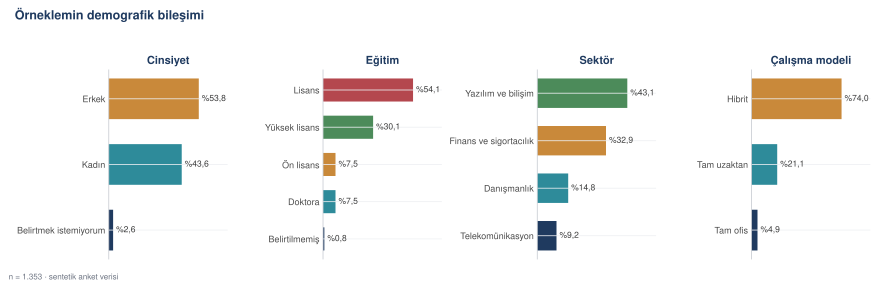
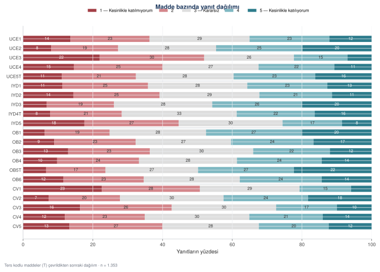
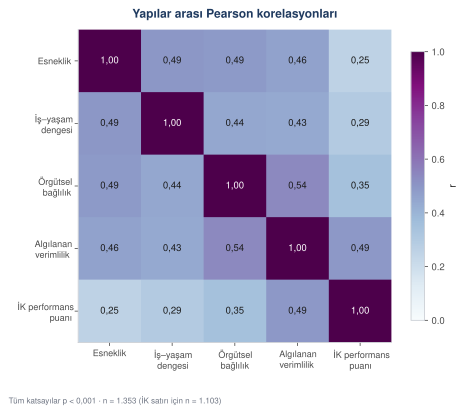
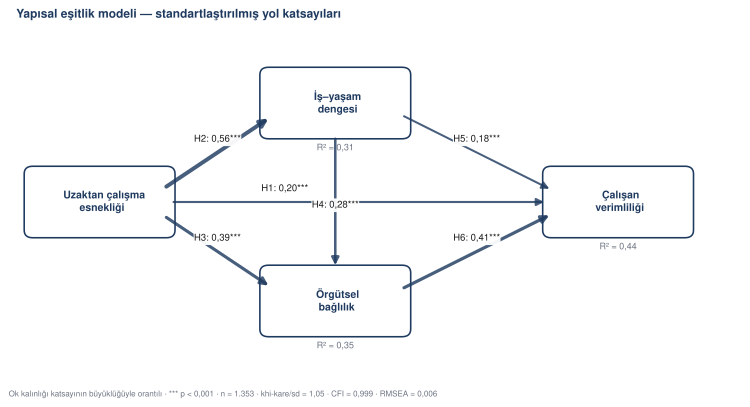
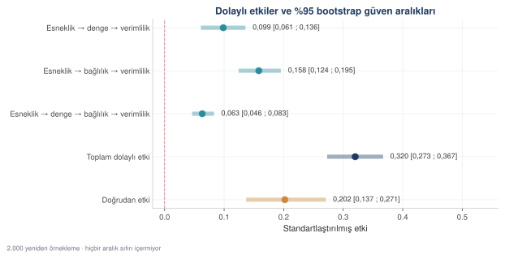
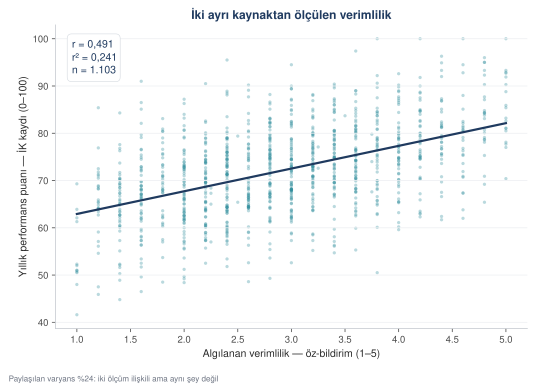
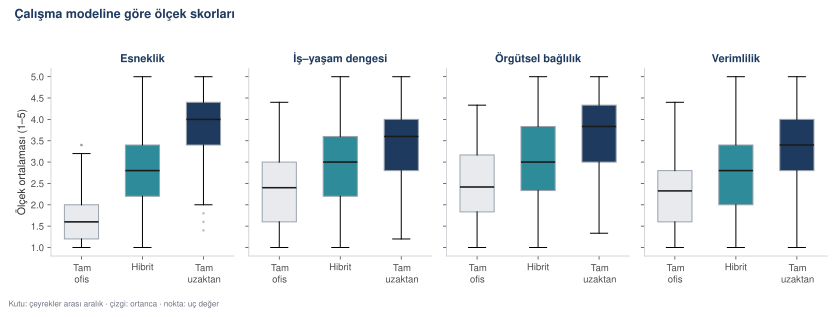
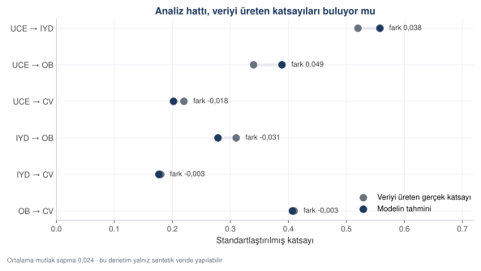

Örnek çalışma: yapısal eşitlik modellemesi
Uzaktan çalışmanın verimlilik ve örgütsel bağlılık üzerindeki etkisi: 1.353 gözlem, altı hipotez, kısmi aracılık. AMOS ve SmartPLS'in yaptığı işin tamamı Python ve R ile — ve sonucun doğruluğunun üç katmanlı denetimi.
Bu bölüm bir ampirik çalışmayı hipotezden makale metnine kadar izler. Kullanılan yöntem, işletme ve iktisat yazınının omurgası olan yapısal eşitlik modellemesi. Alanda bu iş genellikle AMOS ya da SmartPLS ile yapılır; burada aynı iş Python ve R ile, her adımı görünür biçimde yapılıyor.
Çalışmanın künyesi
Başlık. Uzaktan çalışma modellerinin çalışan verimliliği ve örgütsel bağlılık üzerindeki etkisi: post-pandemi dönemi üzerine ampirik bir araştırma.
Amaç. Uzaktan çalışma esnekliği ile çalışanın performans algısı ve kuruma bağlılığı arasındaki neden-sonuç ilişkisini, aracı değişkenleri de hesaba katarak sınamak.
Örneklem. Yazılım, finans, danışmanlık ve telekomünikasyon sektörlerinde çalışan beyaz yakalılar.
Hipotezler
| Hipotez | |
|---|---|
| H1 | Uzaktan çalışma esnekliği, çalışan verimliliğini doğrudan ve pozitif etkiler |
| H2 | Esneklik, iş–yaşam dengesini pozitif etkiler |
| H3 | Esneklik, örgütsel bağlılığı pozitif etkiler |
| H4 | İş–yaşam dengesi, örgütsel bağlılığı pozitif etkiler |
| H5 | İş–yaşam dengesi, verimliliği pozitif etkiler |
| H6 | Örgütsel bağlılık, verimliliği pozitif etkiler |
H2–H6 birlikte bir aracılık iddiası kurar: esnekliğin verimliliğe etkisinin bir kısmı doğrudan değil, iş–yaşam dengesi ve örgütsel bağlılık üzerinden akar. Bu iddianın sınanması bölümün en teknik adımıdır (Adım 10).
Araştırma adım adım
Model ve hipotezlerin kurulması. Değişkenler ve aralarındaki yönler, veri toplanmadan önce yazılır. Veriye bakıp sonra hipotez kurmak (HARKing) en yaygın yöntemsel kusurdur.
Ölçeklerin seçimi. Her gizli yapı için yazında doğrulanmış, izin alınmış bir ölçek kullanılır. Yeni ölçek geliştirmek ayrı bir çalışmadır.
Örneklem büyüklüğünün hesaplanması. Yapısal eşitlik modellemesinde kaba ölçüt gözlenen değişken başına 10–20 gözlemdir; 21 madde için alt sınır 210–420 civarıdır. Grup karşılaştırması yapılacaksa her grupta ayrı ayrı bu sayı aranır.
Veri toplama. Çevrim içi form; dikkat kontrol maddesi ve doldurma süresi kaydı baştan kurguya dâhil edilir. Sonradan eklenemez.
Veri temizliği. Dikkatsiz doldurma, mükerrer kayıt ve aralık dışı değerler elenir. Her elenen satırın gerekçesi yazılır.
Analiz. Betimsel istatistik → güvenilirlik → faktör analizi → ayırt edici geçerlik → yapısal model → aracılık.
- Lisans
- Kurs materyaliyle aynı — serbestçe kullanılabilir
- Boyut
- 1.494 ham satır → 1.353 temiz gözlem · 21 Likert maddesi (1–5) · 12 demografik değişken · 1.103 eşleşen İK kaydı
- Pakette
- uzaktan_ham.csv · uzaktan_temiz.csv · uzaktan_ik_kayitlari.csv · uzaktan_madde_sozlugu.csv · 21_uzaktan_veri_uret.py · 22_uzaktan_temizle.py
Veri sentetiktir ve yapısı bilinen bir modelden üretilmiştir. Bu bir eksiklik değil, bu bölümün çalışma biçimidir: gerçek katsayılar bilindiği için, analizin doğru kurulup kurulmadığı ölçülebilir (Adım 12).
Ham dosya gerçek bir form çıktısının hâlindedir: eksik hücre, tutarsız kategori yazımı, düz çizgi yanıtlar, mükerrer kayıt ve aralık dışı değerler içerir. Temiz dosya ayrı bir betikle üretilir ve yanında bir temizleme günlüğü bırakır.
AMOS ve SmartPLS ne yapar, karşılığı nedir
AMOS bir şey icat etmez; maksimum olabilirlik kestirimi yapan bir arayüzdür. SmartPLS farklı bir kestirim yolu (kısmi en küçük kareler) kullanır ama o da standart bir yöntemdir. İkisinin yaptığı her işin açık kaynak karşılığı var.
| Yazılımın yaptığı | Python | R |
|---|---|---|
| Yol diyagramı çizip model kurma | semopy.Model("CV ~ UCE + OB") |
lavaan::sem() |
| Maksimum olabilirlik kestirimi | model.fit(veri) |
sem(..., estimator = "ML") |
| Uyum iyiliği (CFI, TLI, RMSEA) | semopy.calc_stats() |
fitMeasures() |
| Standartlaştırılmış katsayılar | inspect(std_est=True) |
standardizedSolution() |
| Bootstrap dolaylı etki | Yeniden örnekleme döngüsü | se = "bootstrap" |
| Ölçüm değişmezliği | Zayıf | group.equal = c("loadings", "intercepts") |
| Cronbach α, CR, AVE | Elle, formülle | semTools::reliability() |
| Modifikasyon indisleri | inspect(mode="mx") |
modificationIndices() |
Aşama 1 — Modeli kurdurmak
ROL Örgütsel davranış alanında çalışan, yapısal eşitlik modellemesine hâkim bir yöntem danışmanısın. GÖREV Aşağıdaki araştırma için (a) örtük değişken modelini lavaan sözdiziminde yaz, (b) hipotez tablosunu çıkar, (c) her hipotezin yazındaki dayanağını bir cümleyle belirt. ARAŞTIRMA Bağımsız değişken: uzaktan çalışma esnekliği (UCE) Aracı değişkenler : iş-yaşam dengesi (IYD), örgütsel bağlılık (OB) Bağımlı değişken : algılanan çalışan verimliliği (CV) Her yapı 5-6 maddeyle, beşli Likert ölçeğiyle ölçülecek. KURALLAR - Doğrudan ve dolaylı yolların hepsini modele koy; sonra hangisinin anlamlı çıktığına veri karar versin. - Dolaylı etkileri adlandırılmış katsayıların çarpımı olarak tanımla (:= operatörü). - Modelde kalmasını önerdiğin her yol için gerekçe yaz; gerekçesi olmayan yol ekleme. SINIR Yazından atıf uydurma. Dayanak için [ATIF GEREKLİ: konu] yaz.
# ölçüm modeli UCE =~ UCE1 + UCE2 + UCE3 + UCE4 + UCE5T IYD =~ IYD1 + IYD2 + IYD3 + IYD4T + IYD5 OB =~ OB1 + OB2 + OB3 + OB4 + OB5T + OB6 CV =~ CV1 + CV2 + CV3 + CV4 + CV5 # yapısal model IYD ~ a1*UCE OB ~ a2*UCE + d*IYD CV ~ c*UCE + b1*IYD + b2*OB # dolaylı etkiler y1 := a1*b1 # esneklik → denge → verimlilik y2 := a2*b2 # esneklik → bağlılık → verimlilik y3 := a1*d*b2 # esneklik → denge → bağlılık → verimlilik toplam_dolayli := y1 + y2 + y3 toplam := c + y1 + y2 + y3
Bu altı satır, AMOS'ta yarım saat kutu ve ok çizerek kurulan modelin tamamıdır. Yazıyla kurulmasının bir üstünlüğü var: makaleye yapıştırılabilir, bir hakem okuyabilir ve bir başkası aynısını koşturabilir.
Aşama 2 — Veri temizliği
ROL Anket verisiyle çalışan bir veri analistisin. GÖREV Aşağıdaki ham anket dosyası için temizleme betiği yaz. DOSYA uzaktan_ham.csv — 1.494 satır. 21 Likert maddesi (1-5), 12 demografik değişken, DK1 dikkat kontrol maddesi (doğru yanıt 2), doldurma_sn süre kaydı. UYGULANACAK ÖLÇÜTLER (bu sırayla) 1. Mükerrer kayıt: aynı katilimci_no, ilk gönderim tutulur 2. DK1 != 2 olan satırlar 3. doldurma_sn < 120 olan satırlar 4. 21 maddenin standart sapması 0 olan satırlar (düz çizgi) 5. Likert maddesi 1-5 dışında, yaş 18-70 dışında olan satırlar 6. Maddelerin %10'undan fazlası boş olan satırlar 7. Kategori yazımını tekilleştir (büyük/küçük harf, boşluk) 8. T ile biten maddeleri ters kodla (6 - x) 9. Kalan eksik hücreleri kişinin o ölçekteki ortalamasıyla doldur ÇIKTI - uzaktan_temiz.csv - uzaktan_temizleme_gunlugu.json: her adımda kaç satır elendi, hangi katılımcı hangi gerekçeyle düştü KURALLAR - Sıraya UY. Önce satır ele, sonra kalan satırlarda düzeltme yap. - Demografik eksikleri doldurma, "Belirtilmemiş" yaz. - Her adımı ekrana yazdır. SINIR Hiçbir satırı sessizce atma. Günlüğe girmeyen eleme yapma.
Başlangıç: 1494 satır Mükerrer kayıt − 14 kalan 1480 Dikkat kontrolünü geçemeyen − 68 kalan 1412 Aşırı hızlı doldurma (<120 sn) − 32 kalan 1380 Düz çizgi yanıtlama − 14 kalan 1366 Likert maddesinde aralık dışı değer − 9 kalan 1357 Yaşta aralık dışı değer − 4 kalan 1353 Maddelerin %10'undan fazlası boş − 0 kalan 1353 Kategori yazımı tekilleştirildi 162 hücre Ters kodlu madde çevrildi 3 madde Eksik hücre dolduruldu 57 hücre İK kaydı eşleşen 1103 satır Temiz veri : 1353 satır (elenme oranı %9.4)
Aşama 3 — Analiz hattı
ROL İşletme alanında ölçek geliştirme ve yapısal eşitlik modellemesi üzerine çalışan bir istatistik danışmanısın. Çıktıların bir dergi makalesinin Bulgular bölümüne doğrudan girecek. KAYNAK uzaktan_temiz.csv — 1.353 satır. Ölçekler ve maddeleri: UCE: UCE1-UCE4, UCE5T IYD: IYD1-IYD3, IYD4T, IYD5 OB : OB1-OB4, OB5T, OB6 CV : CV1-CV5 Ayrıca: yillik_performans_puani (İK kaydı), calisma_modeli, demografik değişkenler. GÖREV — bu sırayla, her adım ayrı bölüm olarak 1. Betimsel istatistik ve demografik frekanslar; çarpıklık-basıklık 2. Madde analizi: düzeltilmiş madde-toplam korelasyonu 3. Güvenilirlik: Cronbach α, McDonald ω, bileşik güvenilirlik, AVE 4. Açımlayıcı faktör analizi: KMO, Bartlett, promax döndürme 5. Doğrulayıcı faktör analizi ve uyum iyiliği 6. Ayırt edici geçerlik: Fornell-Larcker ve HTMT 7. Korelasyon matrisi, p değerleriyle 8. Ortak yöntem yanlılığı: Harman tek faktör testi 9. Yapısal model: yol katsayıları, R², hipotez kararları 10. Aracılık: 2000 bootstrap, yüzdelik güven aralığı 11. Ölçüt geçerliği: öz-bildirim ile İK kaydının karşılaştırması 12. Geri kazanım: tahminlerin gerçek katsayılarla karşılaştırması BİÇİM - Her adımın başında iki satır: "Nedir" ve "Neden". - Her ölçütün eşik değerini yaz ve karşılanıp karşılanmadığını söyle. - Çıktı hem okunabilir .txt hem makine okunabilir .json olsun. - Şekillerin kullanacağı her tablo ayrı bir .csv olarak da yazılsın. KURALLAR - Tek dosya, çalıştırılabilir, sabit tohum. - Her işlev için kısa bir açıklama: ne yapıyor ve NEDEN öyle. - Hiçbir eşiği "iyi" diye geçiştirme; sayıyı ve ölçütü yan yana koy. SINIR - Anlamsız çıkan bir sonucu yorumla yumuşatma; olduğu gibi yaz. - Veride olmayan bir değişken uydurma.
Üretilen betik kod/23_analiz_uzaktan.py dosyasında, çıktısı
cikti/isletme_analiz.txt içinde. Aşağıdaki sayıların tamamı o
koşumdan geliyor.
Bulgular
Örneklem



Yaş ortalaması 35,9 (ss = 7,6); kıdem ortalaması 4,7 yıl; haftalık uzaktan çalışılan gün ortalaması 2,5. Dört ölçek ortalamasının çarpıklığı −0,07 ile 0,15 arasında; Kline'ın |çarpıklık| < 2 ve |basıklık| < 7 ölçütüne göre tek değişkenli normallik varsayımı karşılanıyor.



Güvenilirlik ve geçerlik
| Ölçek | Madde | α | ω | CR | AVE | En düşük yük |
|---|---|---|---|---|---|---|
| Uzaktan çalışma esnekliği | 5 | 0,870 | 0,871 | 0,871 | 0,576 | 0,667 |
| İş–yaşam dengesi | 5 | 0,870 | 0,871 | 0,871 | 0,576 | 0,693 |
| Örgütsel bağlılık | 6 | 0,909 | 0,910 | 0,910 | 0,630 | 0,679 |
| Çalışan verimliliği | 5 | 0,873 | 0,874 | 0,874 | 0,583 | 0,680 |
Ölçütler: α ≥ 0,70 · CR ≥ 0,70 · AVE ≥ 0,50 · standart yük ≥ 0,50. Dördü de karşılanıyor.
Açımlayıcı faktör analizi KMO = 0,949, Bartlett χ² = 15.801,4 (p < 0,001) ile uygun bulundu. Özdeğeri 1'in üzerindeki faktör sayısı tam olarak dört; promax döndürmesinden sonra hiçbir madde iki faktöre birden 0,30 üzerinde yüklenmiyor. Dört faktör toplam varyansın %66,2'sini açıklıyor.
Doğrulayıcı faktör analizi: χ²/sd = 1,05 · CFI = 0,999 · TLI = 0,999 · RMSEA = 0,006 · SRMR = 0,017.
Ayırt edici geçerlikte Fornell–Larcker ölçütü sağlanıyor (her köşegen √AVE, kendi satırındaki her korelasyondan büyük) ve en yüksek HTMT oranı 0,604 — 0,85 eşiğinin oldukça altında.



Ortak yöntem yanlılığı
Harman tek faktör testinde döndürülmemiş tek faktör toplam varyansın %40,9'unu açıklıyor; %50 eşiğinin altında.
Yapısal model



| Hipotez | Yol | β | s.h. | z | p | Karar |
|---|---|---|---|---|---|---|
| H1 | Esneklik → Verimlilik | 0,202 | 0,034 | 5,87 | < 0,001 | Destekleniyor |
| H2 | Esneklik → İş–yaşam dengesi | 0,558 | 0,030 | 18,50 | < 0,001 | Destekleniyor |
| H3 | Esneklik → Örgütsel bağlılık | 0,389 | 0,034 | 11,59 | < 0,001 | Destekleniyor |
| H4 | İş–yaşam dengesi → Bağlılık | 0,279 | 0,033 | 8,45 | < 0,001 | Destekleniyor |
| H5 | İş–yaşam dengesi → Verimlilik | 0,177 | 0,033 | 5,37 | < 0,001 | Destekleniyor |
| H6 | Örgütsel bağlılık → Verimlilik | 0,407 | 0,033 | 12,28 | < 0,001 | Destekleniyor |
Açıklanan varyans: iş–yaşam dengesi R² = 0,311 · örgütsel bağlılık R² = 0,350 · çalışan verimliliği R² = 0,438.
Aracılık



| Etki | Kestirim | %95 GA alt | %95 GA üst |
|---|---|---|---|
| Esneklik → denge → verimlilik | 0,099 | 0,061 | 0,136 |
| Esneklik → bağlılık → verimlilik | 0,158 | 0,124 | 0,195 |
| Esneklik → denge → bağlılık → verimlilik | 0,063 | 0,046 | 0,083 |
| Toplam dolaylı | 0,320 | 0,273 | 0,367 |
| Doğrudan | 0,202 | 0,137 | 0,271 |
| Toplam | 0,522 | 0,475 | 0,568 |
Dolaylı etkinin toplam etkiye oranı (VAF) %61,3. Doğrudan yol anlamlılığını koruduğu ve dolaylı etki toplamın yarısından fazlasını oluşturduğu için sonuç kısmi aracılık olarak okunur.
Ölçüt geçerliği
Algılanan verimlilik ile kurumun yıllık performans puanı arasında r = 0,491 (p < 0,001, n = 1.103). Paylaşılan varyans %24,1.



Bu, bulguyu zayıflatan değil sınırını çizen bir sayıdır. Anketle ölçülen şey algıdır; kurumun kaydı başka bir ölçümdür ve ikisinin dörtte bir ortaklığı olması beklenen bir sonuçtur. Makalede bu açıkça yazılır.



Aynı sonuçtan nasıl emin oluruz
Yapay zekânın yazdığı analiz kodunun doğru olduğundan emin olmanın tek bir yolu yok; üç ayrı katmanı var ve üçü farklı hata türünü yakalar.
Katman 1 — Aynı modeli ikinci bir motorda koşturmak
ROL R ve lavaan paketine hâkim bir yöntem danışmanısın. GÖREV Aşağıdaki modeli R/lavaan ile koşturan bir betik yaz. Amaç, Python tarafında semopy ile elde edilen sonuçları BAĞIMSIZ olarak doğrulamak. MODEL [lavaan sözdizimindeki model] İSTENENLER 1. ML kestirimi, uyum iyiliği ölçütleri, standartlaştırılmış katsayılar 2. 2000 bootstrap ile dolaylı etki güven aralıkları 3. Ölçüm değişmezliği: hibrit ve tam uzaktan çalışanlar arasında biçimsel → ölçümsel → skalar, ΔCFI ve ΔRMSEA ile KURALLAR - Katsayıları dört ondalıkla yazdır ki Python çıktısıyla karşılaştırılabilsin. - Bootstrap çıktısının standartlaştırılmış mı ham ölçekte mi olduğunu açıkça belirt; ikisini karıştırma. SINIR Python çıktısını sana vermiyorum. Kendi sonucunu üret; karşılaştırmayı ben yapacağım.
Son satır önemli. Modele "şu sonucu doğrula" derseniz doğrular. Karşılaştırmayı kendiniz yapmazsanız denetim denetim olmaktan çıkar.
| Yol | semopy (Python) | lavaan (R) | Fark |
|---|---|---|---|
| Esneklik → İş–yaşam dengesi | 0,5578 | 0,5579 | 0,0001 |
| Esneklik → Örgütsel bağlılık | 0,3890 | 0,3890 | 0,0000 |
| İş–yaşam dengesi → Bağlılık | 0,2787 | 0,2788 | 0,0001 |
| Esneklik → Verimlilik | 0,2020 | 0,2020 | 0,0000 |
| İş–yaşam dengesi → Verimlilik | 0,1767 | 0,1768 | 0,0001 |
| Örgütsel bağlılık → Verimlilik | 0,4069 | 0,4070 | 0,0001 |
İki bağımsız yazılım, dördüncü ondalığa kadar aynı sayıyı veriyor. Fark sayısal yuvarlama düzeyinde.
Grup büyüklükleri: Hibrit = 1001 · Tam uzaktan = 286 bicimsel χ²= 386.62 sd=366 CFI=0.9984 RMSEA=0.0094 olcumsel χ²= 401.72 sd=383 CFI=0.9986 RMSEA=0.0087 ΔCFI=+0.0001 skalar χ²= 417.56 sd=400 CFI=0.9987 RMSEA=0.0083 ΔCFI=+0.0001 Skalar değişmezlik sağlanıyor: iki grup aynı ölçekle ölçülmüş, grup karşılaştırması yapılabilir.
Chen'in (2007) ölçütü ΔCFI < 0,01 ve ΔRMSEA < 0,015. Her iki geçişte de fark binde bir düzeyinde. Şekil 15.7'deki grup karşılaştırmasının meşruiyeti bu tabloya dayanır.
Katman 2 — Bilinen bir yapıyı geri kazanmak



| Yol | Gerçek | Tahmin | Fark |
|---|---|---|---|
| Esneklik → İş–yaşam dengesi | 0,520 | 0,558 | +0,038 |
| Esneklik → Örgütsel bağlılık | 0,340 | 0,389 | +0,049 |
| Esneklik → Verimlilik | 0,220 | 0,202 | −0,018 |
| İş–yaşam dengesi → Bağlılık | 0,310 | 0,279 | −0,031 |
| İş–yaşam dengesi → Verimlilik | 0,180 | 0,177 | −0,003 |
| Örgütsel bağlılık → Verimlilik | 0,410 | 0,407 | −0,003 |
Bu denetim gerçek bir araştırmada yapılamaz — gerçek katsayı bilinmez. Ama analiz hattınızı bir kez kurduktan sonra, yapısını bildiğiniz sentetik bir veri üretip hattı onun üzerinde koşturmak mümkündür. Hat doğru kuruluysa üretim katsayılarını bulur. Bulmuyorsa kodda bir yanlış vardır ve bunu gerçek veriyle hiç fark edemezsiniz.
Katman 3 — Elle hesap denetimi
En basiti ve en çok atlananı. Betiğin verdiği sayılardan üç tanesini
seçin ve başka bir yolla hesaplayın: Cronbach α'yı Excel'de, bir
korelasyonu elle, bir ortalamayı describe() ile. Üçü de tutuyorsa
hattın temeli sağlamdır.
Kod hatasız çalıştı. Sayılar makul görünüyor. Model "doğrulayabilir misin" dedim, doğruladı.
Aynı model iki bağımsız yazılımda koşturuldu, katsayılar dördüncü ondalığa kadar örtüştü. Bilinen yapıda sentetik veriyle geri kazanım sınandı. Üç sayı elle yeniden hesaplandı.
Makaleyi yazmak
Yöntem bölümü
ROL İşletme alanında yayın yapan bir akademisyensin. SCI/SSCI dergi formatında Yöntem bölümü yazıyorsun. GÖREV Aşağıdaki bilgilerden Yöntem bölümünü yaz. BİLGİLER Desen: kesitsel anket çalışması. Örneklem: n = 1.353 beyaz yaka çalışan; dört sektör; demografik dağılım [tablo]. Ölçekler: dört ölçek, 21 madde, beşli Likert; üç madde ters kodlu. Veri temizliği: 1.494 → 1.353, elenme %9,4, ölçütler [liste]. Analiz: CFA + SEM, ML kestirimi, semopy 2.3.11 ve lavaan 0.7-3. Aracılık: 2000 bootstrap, yüzdelik GA. Ölçüm değişmezliği: skalar düzeyde sağlandı. BİÇİM - Dört alt başlık: Örneklem · Ölçüm araçları · Veri temizliği · Analiz stratejisi - Her yazılımın sürüm numarasını yaz. Yeniden üretilebilirlik için gerekli. - Elenen satır sayısını ve gerekçesini tablo olarak ver. SINIR - Hiçbir sayıyı değiştirme ya da yuvarlama. - Yapmadığımız bir işlemi yazma. Eksik gördüğün yere [EKSİK: ...] yaz.
Analiz stratejisi
Çözümleme iki aşamada yürütüldü. Birinci aşamada Anderson ve Gerbing'in (1988) önerdiği iki adımlı yaklaşım izlenerek ölçüm modeli doğrulayıcı faktör analiziyle sınandı; ölçüm modelinin kabul edilebilir uyum sağladığı belirlendikten sonra yapısal model kestirildi. Kestirimlerde maksimum olabilirlik yöntemi kullanıldı.
Model uyumu χ²/sd, CFI, TLI, RMSEA ve SRMR ölçütleriyle değerlendirildi; eşik değerler olarak χ²/sd < 3, CFI ve TLI ≥ 0,95, RMSEA ≤ 0,06 ve SRMR ≤ 0,08 benimsendi (Hu & Bentler, 1999). Yakınsak geçerlik için standartlaştırılmış faktör yükleri, bileşik güvenilirlik ve açıklanan ortalama varyans; ayırt edici geçerlik için Fornell–Larcker ölçütü ve HTMT oranı incelendi.
Dolaylı etkilerin anlamlılığı 2.000 yeniden örneklemeli bootstrap yöntemiyle, yüzdelik güven aralıkları üzerinden değerlendirildi (Preacher & Hayes, 2008). Hibrit ve tam uzaktan çalışan gruplarının karşılaştırılabilmesi için önce ölçüm değişmezliği sınandı; biçimsel, ölçümsel ve skalar modeller arasındaki ΔCFI ve ΔRMSEA değerleri Chen'in (2007) ölçütleriyle karşılaştırıldı.
Çözümlemeler Python 3.14 ortamında semopy 2.3.11 ve R 4.6.1 ortamında lavaan 0.7-3 paketleriyle yürütüldü. İki yazılımla elde edilen standartlaştırılmış katsayılar dördüncü ondalık basamağa kadar örtüşmektedir. Analiz betikleri ve veri seti [EKSİK: depo bağlantısı] adresinde erişime açıktır.
Bulgular bölümü
ROL İşletme alanında yayın yapan bir akademisyensin. GÖREV Aşağıdaki analiz çıktısından Bulgular bölümünü yaz. ÇIKTI [isletme_analiz.txt dosyasının tamamı] BİÇİM - Sıra: betimsel → güvenilirlik ve geçerlik → ortak yöntem yanlılığı → yapısal model → aracılık. - Her hipotez için β, s.h., z ve p birlikte verilsin. - Tabloları APA biçiminde kur; aynı sayıyı hem tabloda hem metinde tekrarlama, metinde yalnız öne çıkanı söyle. KURALLAR - Bulguyu yorumlama. Yorum Tartışma bölümünde yapılır; burada yalnız ne bulunduğu yazılır. - "Anlamlı bir ilişki bulunmuştur" demekle yetinme; yönünü ve büyüklüğünü söyle. - p değerini "p = 0,000" diye yazma; "p < 0,001" yaz. SINIR Çıktıda olmayan hiçbir sayıyı yazma.
Aracılık etkilerinin anlamlılığı 2.000 yeniden örneklemeli bootstrap yöntemiyle sınanmıştır. Uzaktan çalışma esnekliğinin çalışan verimliliği üzerindeki toplam dolaylı etkisi β = 0,320 (%95 GA [0,273; 0,367]) olarak bulunmuş, güven aralığının sıfırı içermemesi dolaylı etkinin anlamlı olduğunu göstermiştir. Üç dolaylı yolun tamamı ayrı ayrı anlamlıdır; en güçlü aracılık örgütsel bağlılık üzerinden gerçekleşmektedir (β = 0,158; %95 GA [0,124; 0,195]).
Doğrudan etki de anlamlılığını korumaktadır (β = 0,202; %95 GA [0,137; 0,271]). Dolaylı etkinin toplam etkiye oranı (VAF) %61,3 olarak hesaplanmıştır. Bu değerler, iş–yaşam dengesi ve örgütsel bağlılığın kısmi aracı rol üstlendiğine işaret etmektedir.
Tartışma
ROL İşletme ve örgütsel davranış alanında yayın yapan bir akademisyensin. GÖREV Bulguları yazınla ilişkilendiren Tartışma bölümünü yaz. BULGULAR [hipotez tablosu, R², VAF, ölçüt geçerliği sonucu] BİÇİM - 700-800 sözcük. - Her hipotez için: yazındaki beklenti · bu çalışmanın bulgusu · uyuşuyor mu, uyuşmuyorsa neden olabilir. - Kuramsal katkı ve uygulamaya dönük çıkarımlar ayrı alt başlıklar. - Sınırlılıklar KENDİ alt başlığında, bir kez, sade dille. SINIR - Nedensellik dili kurarken dikkatli ol: kesitsel veridir. "Artırmaktadır" değil "pozitif yönde ilişkilidir" ya da "modelde pozitif bir yol katsayısıyla temsil edilmektedir". - Öz-bildirim ölçümünün sınırını bir kez belirt. - Atıf uydurma; [ATIF GEREKLİ: konu] yaz.
Sınırlılıklar
Araştırma kesitsel bir desene dayanmaktadır; değişkenler arasındaki ilişkiler kuramsal olarak gerekçelendirilmiş yönlerle modellenmiş olsa da, nedensellik çıkarımı için boylamsal ya da deneysel bir desen gerekir. Verimlilik ölçümü büyük ölçüde katılımcının kendi değerlendirmesine dayanmaktadır; kurumun performans kaydıyla karşılaştırma iki ölçümün %24 oranında ortak varyans taşıdığını göstermiştir, dolayısıyla bulgular algılanan verimlilik üzerinden okunmalıdır. Örneklem dört sektörle sınırlıdır ve mavi yaka ya da sahada çalışan gruplar kapsanmamıştır; uzaktan çalışma esnekliğinin tanımı bu gruplar için farklı işleyecektir.
Pakette ne var
Bu bölümün bütün dosyaları kurs paketinde duruyor. Betikleri kendi makinenizde koşturursanız aynı sayıları alırsınız; tohum sabittir.
| Dosya | İçerik |
|---|---|
| 21_uzaktan_veri_uret.py | Veri üretimi; gerçek katsayılar burada tanımlı |
| 22_uzaktan_temizle.py | Temizleme, dokuz ölçüt, günlük |
| 23_analiz_uzaktan.py | On iki adımlık analiz hattı |
| 24_lavaan_dogrulama.R | R/lavaan çapraz doğrulama ve değişmezlik |
| 27_sekiller_isletme.py | Sekiz şeklin tamamı |
| uzaktan_ham.csv | Ham anket, 1.494 satır |
| uzaktan_temiz.csv | Temiz veri, 1.353 satır |
| uzaktan_ik_kayitlari.csv | İkincil veri: İK performans kayıtları |
| uzaktan_madde_sozlugu.csv | Madde metinleri, ölçek, ters kodlama |
| uzaktan_gercek_parametreler.csv | Veriyi üreten gerçek katsayılar |
| uzaktan_temizleme_gunlugu.json | Hangi satır neden elendi |
| isletme_analiz.txt | Analiz raporunun tamamı |
| isletme_analiz.json | Aynı sonuçlar, makine okunabilir |
| isletme_lavaan.txt | R koşumunun raporu |
Ara tablolar ayrı dosyalarda: betimsel · demografi · madde analizi · güvenilirlik · EFA yükleri · CFA yükleri · Fornell–Larcker · HTMT · korelasyon · hipotezler · aracılık · geri kazanım · lavaan katsayıları · lavaan bootstrap · ölçüm değişmezliği
Kendi çalışmanıza uyarlama
Modeli veriden önce yazın. Model belirtimini lavaan sözdiziminde yazıp ön kayıt belgesine koyun. Veriye bakıp hipotez kurmanın (HARKing) önündeki tek gerçek engel budur.
Dikkat kontrolünü forma baştan koyun. Tek bir madde ve süre kaydı, elenme gerekçenizi savunulabilir kılar. Sonradan eklenemez.
İki ölçüm kaynağı arayın. Mümkünse bağımlı değişkeni ikinci bir kaynaktan da ölçün. Ortak yöntem yanlılığına karşı en güçlü savunma budur ve Harman testinden kat kat değerlidir.
Analiz betiğinizi sentetik veriyle sınayın. Yapısını bildiğiniz 500 satırlık bir veri üretin, betiği koşturun, katsayıları geri alıp almadığınıza bakın.
İkinci bir motorda doğrulayın. Python'da kurduysanız R'de, R'de kurduysanız Python'da bir kez koşturun. Katsayılar üçüncü ondalıktan sonra ayrışıyorsa bir yerde bir fark vardır ve bulmaya değer.
Betik ve veriyi yayımlayın. Model belirtimi, temizleme günlüğü ve analiz betiği bir depoda dursun. Bu, makalenizin hakemlik sürecinde en çok işinize yarayacak dosyadır.
Akademide Üretken Yapay Zekâ — uygulamalı kurs. Hazırlayan: Dr. Mehmet Sevri, Recep Tayyip Erdoğan Üniversitesi. Bu sayfadaki bütün sayısal çıktılar, yanındaki kod ve veri dosyalarıyla yerel olarak üretilmiştir; hiçbiri elle yazılmamıştır.
Kullanılan gerçek veri setleri CC BY 4.0 ile dağıtılmaktadır ve kaynakları ilgili bölümde künyeleriyle verilmiştir. Sentetik veri kullanılan yerler açıkça işaretlenmiştir.
Buradaki istemler ve çıktılar öğretim malzemesidir. Yapay zekâ araçlarının kullanımından doğan hatalardan, uydurma kaynaklardan ve bunların yer aldığı çalışmalardan kurs ve hazırlayanı sorumlu tutulamaz; sorumluluk aracı kullanan araştırmacıya aittir. Sorumluluk ve etik beyanı · Dr. Mehmet Sevri — kişisel sayfa